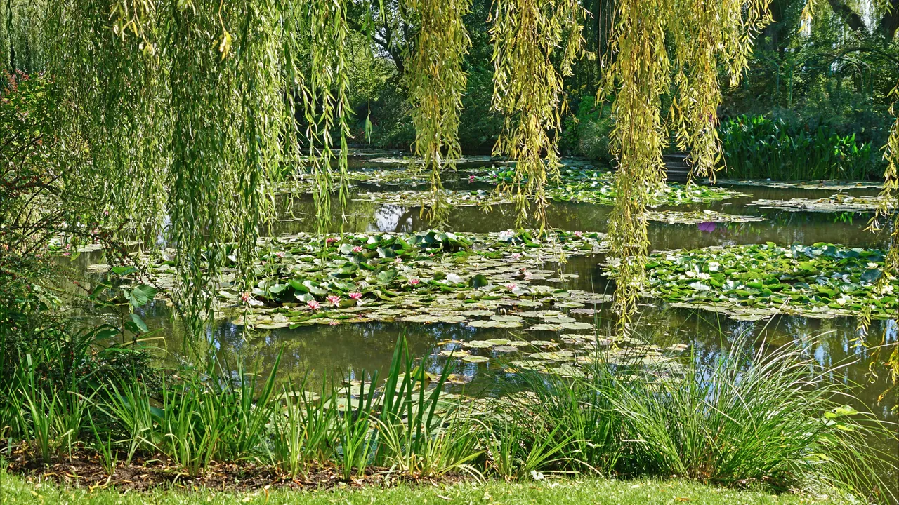

_(48751405171).jpg){kind=link}
관광·미술관
Nous avons déjà des billets.
이미 표가 있습니다.
누 자봉 데자 데 비예

파리 서쪽 노르망디(Normandie)의 센 강변 마을 지베르니에 위치한 인상주의의 거장 클로드 모네(Claude Monet)가 1883년부터 1926년 임종 때까지 43년간 살았던 생가이자 예술 정원(Fondation Claude Monet)이다.
모네는 단순한 화가에 머물지 않고 정원사이자 건축가로서 직접 흙을 파고 꽃을 심으며 "그림을 그리기 위해 정원을 만들었다"고 회고했다.
봄부터 가을까지 장미, 양귀비, 아이리스, 붓꽃이 화려하게 피어나는 프랑스식 전통 화단 '클로 노르망(Clos Normand)'과, 에프테(Epte) 강의 물을 끌어와 수련과 버드나무, 대나무를 심고 초록색 아치형 다리를 놓은 동양적인 '물의 정원(Jardin d'eau)', 그리고 모네가 수집한 방대한 일본 우키요에(Ukiyo-e) 판화와 작업 도구가 그대로 보존된 핑크빛 모네의 생가 아틀리에가 완벽하게 복원되어 있다.
"오르세와 오랑주리 미술관에 걸린 『수련』 캔버스 속으로 직접 걸어 들어가는 듯한 마법 같은 체험이다." 연못의 버드나무 아래를 거닐며 수면 위에 비치는 하늘과 수련을 감상하고, 모네의 아틀리에 창문 너머로 꽃밭을 내려다보는 3~4시간 노르망디 근교 당일치기 코스로 완벽하다.
| 운영시간 | 재확인 |
|---|---|
| 휴무 | 재확인 |
| 예약 | 재확인 |
| 주소 | 재확인 |
| 항목 | 상세 정보 |
|---|---|
| 위치 | 84 Rue Claude Monet, 27620 Giverny (Eure) |
| 운영 시즌 | 매년 3월 말–11월 1일 매일 09:30–18:00 (입장 마감 17:30) / 겨울철 휴관 |
| 입장료 | 일반 성인 €11.50, 학생 €7.00, 7세 미만 무료 (사전 온라인 예매 필수) |
| 철도 및 셔틀 접근 | 파리 생라자르(Gare Saint-Lazare)역에서 SNCF TER 기차로 베르농(Vernon-Giverny)역까지 이동(약 45분) → 역 앞에서 지베르니행 셔틀버스(Navette, 편도 €5 / 15분 소요) 탑승 |
| 사전 예매 팁 | 현장 매표 줄이 매우 길기 때문에 공식 사이트(fondation-monet.com)에서 사전 티켓 온라인 예매(Skip-the-line) 필수 |
Nous avons déjà des billets.
이미 표가 있습니다.
누 자봉 데자 데 비예
On peut prendre des photos ?
사진 찍어도 되나요?
옹 푀 프랑드르 데 포토
Où commence la visite ?
관람은 어디서 시작하나요?
우 코망스 라 비지트

1868년 앙리 라브루스트가 주철 기둥과 9개 도자기 돔으로 완성한 19세기 건축의 걸작 '라브루스트 열람실'과 일반에 전면 무료 개방된 거대한 타원형 '오발 열람실(Salle Ovale)', 프랑스 국립도서관 박물관.

18세기 원형 곡물거래소를 세계적인 건축가 안도 다다오가 노출 콘크리트 원통 실린더로 리노베이션한 현대미술관. 프랑수아 피노 회장의 세계적 현대미술 컬렉션과 1889년 돔 천장 무역 파노라마 프레스코화.

렌조 피아노와 리처드 로저스가 건물 배관과 골격을 외벽으로 노출시킨 20세기 하이테크 건축의 전설이자 유럽 최대 근현대미술관. ⚠ 2025년 가을부터 2030년까지 전면 개보수 공사로 본관 폐관 중.

1900년 파리 만국박람회를 위해 건립된 45m 높이 아르누보 철골 유리 네이브(Nave)의 기념비적 국립 전시장. 2024 파리 올림픽을 거쳐 리노베이션 완료 후 재개관한 파리 문화 예술의 중심지.

중세 소르본 대학 교수와 학생들이 공용어로 라틴어를 쓰던 데서 유래한 800년 파리 지성의 요람이자 센 강 좌안(Rive Gauche)의 심장. 프랑스 위인들의 성소 팡테옹(Panthéon), 셰익스피어 앤 컴퍼니, 뤽상부르 공원.

17세기 귀족 저택(Hôtel particulier), 파리에서 가장 오래된 대칭 광장 보주 광장(Place des Vosges), 유대인 전통 미식 로지에 거리, 북마레의 감각적인 독립 부티크와 갤러리가 공존하는 역사·트렌드 지구.